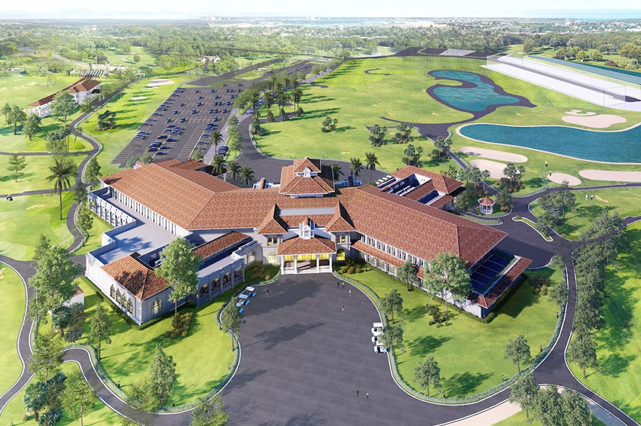
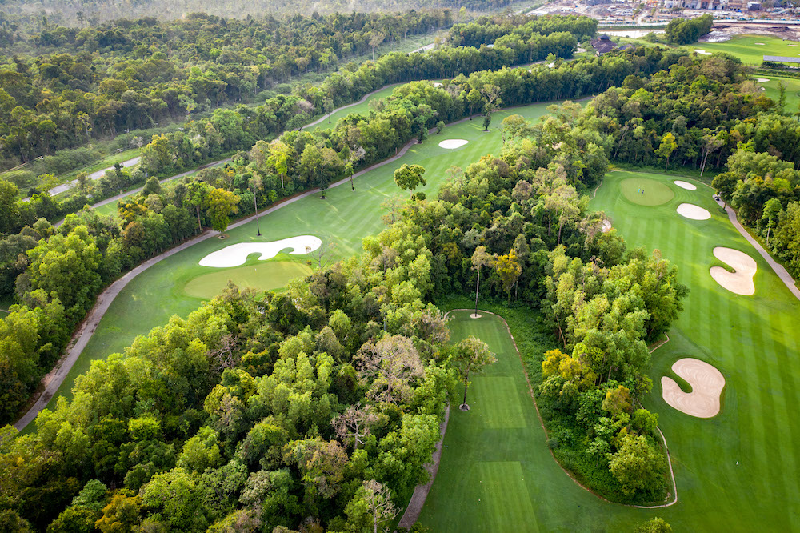

빈펄 레만 골프 클럽은 베트남의 대표 리조트 브랜드인 **Vinpearl**이 운영하는 프리미엄 골프 코스로, 자연 지형을 최대한 살려 설계된 아름다운 18홀 골프장입니다. 고급 리조트와 연계된 편의시설, 완벽한 코스 관리, 조용한 자연환경 덕분에 휴양과 골프를 동시에 즐기려는 골퍼들에게 특히 사랑받습니다.

빈펄 레만 골프 클럽은 **18홀 챔피언십 코스**로 이루어져 있으며, 자연 호수와 구릉지형을 배치해 부드러우면서도 전략적인 플레이가 가능한 것이 특징입니다. 코스는 전체적으로 여유로운 폭을 유지하면서도 벙커와 워터 해저드가 균형 있게 배치되어 있어 중급·상급 골퍼들에게도 충분한 도전 요소를 제공합니다.
그린 속도는 일정하고 관리가 매우 잘 되어 있으며, 티샷부터 어프로치까지 모든 샷에서 안정감을 느낄 수 있는 구조로 설계되어 있습니다. 라운딩 내내 자연의 조용함이 흐르는 힐링 코스로도 유명합니다.

빈펄 레만 골프 클럽은 주요 관광지 및 리조트와 가까워 여행 일정 중 부담 없이 라운딩을 포함할 수 있는 장점이 있습니다. 리조트와 골프장이 한 곳에 위치해 있어 이동 스트레스가 적으며, 휴식과 스포츠를 함께 즐기려는 여행객에게 특히 적합한 환경을 제공합니다.
자연이 풍부한 지역에 위치해 있어 공기가 맑고 조용하며, 도시의 혼잡함에서 벗어나 여유로운 시간을 보내기에 최적의 골프장입니다.
빈펄 레만의 클럽하우스는 고급 리조트 수준의 시설을 갖추고 있으며, 넓은 락커룸, 샤워실, 레스토랑, 프로샵 등이 완비되어 있습니다. 내부는 청결하게 유지되며, 고객 중심의 서비스로 평가가 매우 높습니다.
레스토랑에서는 리조트급 조식을 포함한 다양한 아시아 및 서양식 메뉴를 제공하며, 캐디들은 프로페셔널 교육을 받은 인력들로 그린 라인 안내와 거리 측정이 정확해 플레이 만족도를 크게 높여줍니다.

빈펄 레만 골프 클럽은 ‘리조트형 골프장’, ‘휴양 + 골프 여행’, ‘베트남 프리미엄 골프 코스’ 등 다양한 키워드에서 높은 만족도를 보이며 추천되는 골프장입니다. 골프와 휴양을 모두 원하는 여행객에게 특히 인기 있습니다.
베트남에서 완성도 높은 리조트형 골프를 경험하고 싶은 골퍼분들께 빈펄 레만 골프 클럽은 최고의 선택이 될 것입니다. 라운딩 예약, 픽업 서비스, 그린피 문의는 언제든 편하게 상담해 주세요.
